Overview
Playground is a child care management software that manages billing, attendance, registration, communication, paperwork, reporting, and more for childcare programs. As a startup, their main focus was to break into the child care management market, which was dominated by existing companies such as Brightwheel. To encourage more users to engage with the Playground website and learn more about Playground, my team was tasked with designing and developing four web business tools that help users accomplish simple tasks such as calculating their ERTC eligibility or creating invoices. I was solely in charge of designing the Time Space Calculator and ERTC Eligibility Assessment.
Time Space Calculator
A calculator tool to help users determine what percentage of their home is being used for businesses, so they can base their expenses such as property tax, utilities, home repairs, and homeowner’s insurance on this amount.
TIME SPACE CALCULATOR: LITERATURE REVIEW
What Is A Time Space Calculator?
I began by conducting a literature review on an article the Texas Workforce Commission to learn what the Time Space Calculator is and how it functions. From this article, I also found the formula that this tool would be based around. To summarize, home-based child care providers need to calculate their business expenses in order to receive reimbursement from the Child Care Relief Fund. To do this, they must calculate how much time and space they use their personal home for their business.
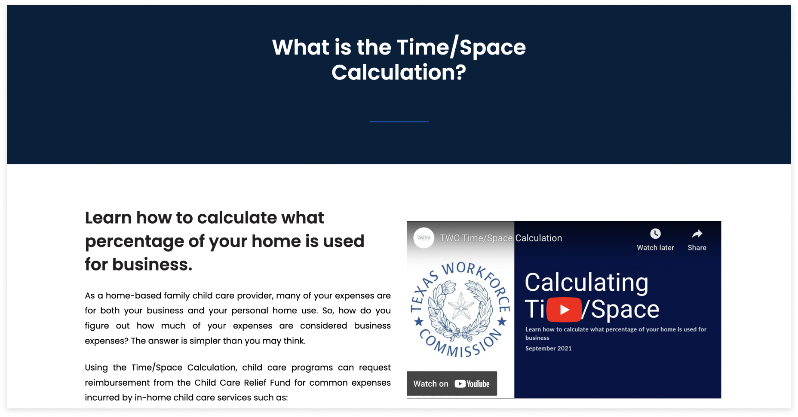TIME SPACE CALCULATOR: LO-FI SKETCHES
Creating The Skeleton
The client shared that they would like each step on a separate page instead of a one-page form, so I created some simple low-fidelity wireframes of all the necessary inputs and frames based on the time space percentage formula. The key during this stage was to lay down the foundation for the tool based on the formula I found from my literature review.
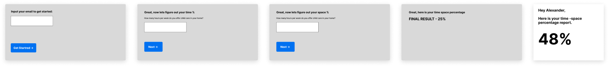TIME SPACE CALCULATOR: MID-FI PROTOTYPE
First Deliverable
The client already had a format for the web tool pages which consists of the name and description at the top and the tool at the bottom, so I designed my tool using this format. I also included their nav bar to make the mockup feel more realistic so the client has a better idea of how the tool will look. For the tool itself, the client shared a few reference tools of designs he liked, so I referenced the layout of Service Titan’s Service Business Valuation Calculator tool and followed a similar center-aligned text for my first deliverable. I also designed a multi-step progress bar so users can clearly see which step they are on.
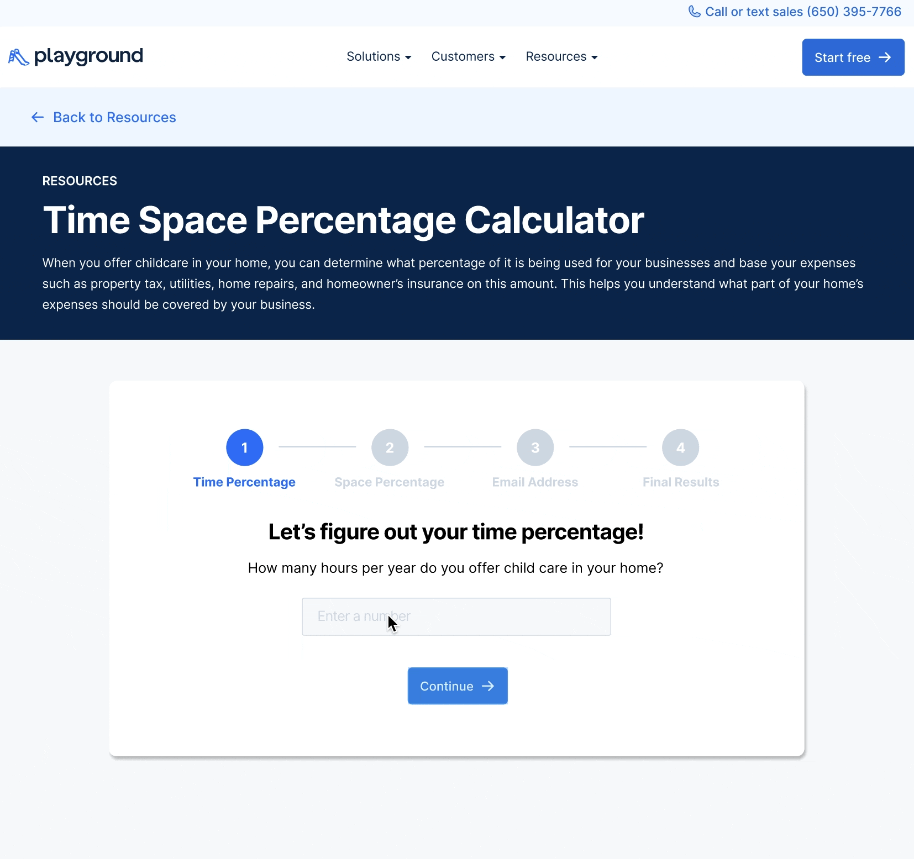TIME SPACE CALCULATOR: MID-FI PROTOTYPE
Change In Layout
During the middle of the project, the client wanted to change the layout for all the tool pages to have the title and description on the left side instead of at the top and the tool on the right, so I changed the layout accordingly. After presenting our mid-fidelity prototype to our client, I implemented the following changes based on the feedback received.
01
Center-aligned to a left-align
I decided to opt for a left-align format for better readability.
02
Non-labeled progress bar
I redesigned the progress bar to be non-labeled because the labeled progress bar was not responsive on tablet and mobile as it requires too much screen real estate. I also changed the color of the progress bar from blue to green, because the color green is often associated with success and it better highlights the progress bar as it contrasts with Playground’s primarily blue design system.
03
More transitions and animations
I added a processing animation that turns into a checkmark for positive reinforcement for the user. The final Time Space Percentage Report was also animated instead of being an image to make the frame more interesting.
04
Error Example
I provided a sample illustrating the appearance of an error when attempting to proceed to the next step without inputting any information. This serves to give both my client and developers an idea of how an error would look like.
TIME SPACE CALCULATOR: HI-FI PROTOTYPE
Final Design
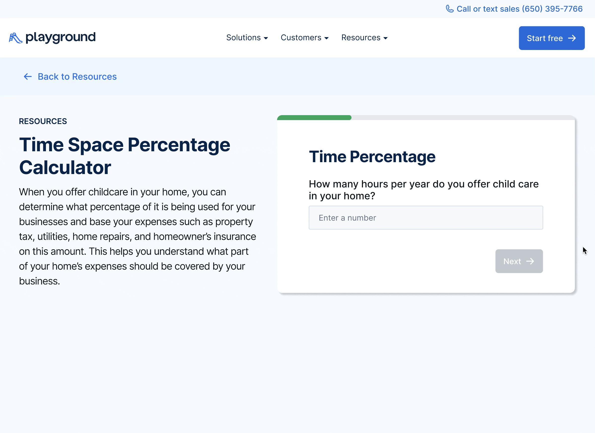Employee Retention Tax Credit (ERTC) Eligibility Assessment
An assessment tool to help users find whether they are eligible for the Employer Retention Tax Credit, which is a refundable tax credit for businesses that continued to pay employees while either shut down due to the COVID-19 pandemic or had significant declines in gross receipts.
ERTC ELIGIBILITY ASSESSMENT: LITERATURE REVIEW
What Is ERTC?
I conducted multiple literature reviews on various articles and informational sessions to learn what ERTC means and how to determine eligibility. I learned that determining eligibility is a confusing process because applicants can qualify in more ways than one, there are multiple determinants, and eligibility requirements differ depending the year. I found this chart from Jamie Trull’s blog which organized the requirements in a more digestible format, and began creating a low fidelity prototype.
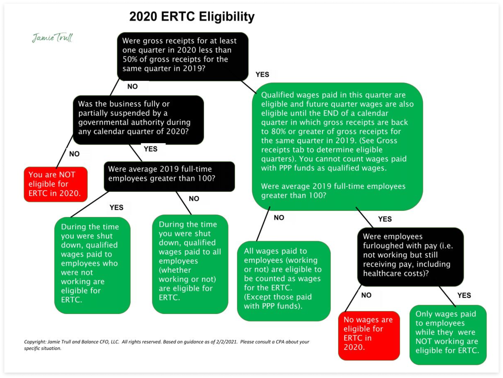ERTC ELIGIBILITY ASSESSMENT: LO-FI WIREFRAMES
Organizing The User Flow
I started off by creating low-fidelity wireframes for each question in the flow chart. The focus of this phase was to map out how each frame connected with each other and organize the task flow.
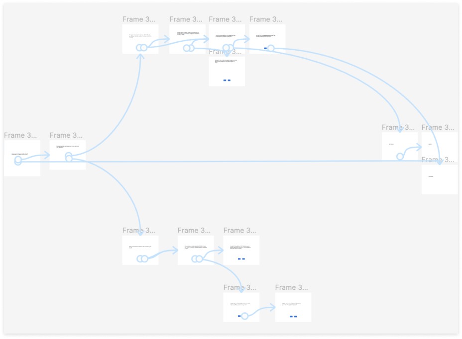ERTC ELIGIBILITY ASSESSMENT: MID-FI PROTOTYPE
Mid-Fi Prototype Iterations
After figuring out how each page was connected, we began to focus on establishing a format to display the information.
Iteration 1
During this time, the client had not yet changed the layout of the web tool so the first iteration was designed based on the original format. To keep all the tools fairly consistent, I followed a similar layout to the Time Space Calculator. I also added arrows to the buttons to keep it consistent with the other button components on Playground’s website.
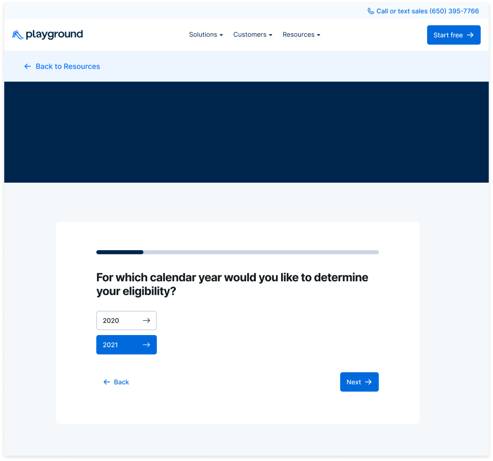However, after presenting this to the client, they felt that there were too many arrows and they associated arrows with moving to a new frame. Thus, I ideated various other button components for the client to pick from. The client liked the 3rd version, so I proceeded with those buttons.
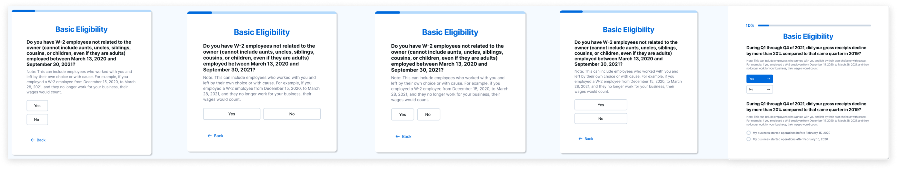Iteration 2
The client also wanted to group some of the related questions into the same frame. The frame would begin with only one question, but after the user successfully completes the question, the next part will be revealed at the bottom. With the old layout for all the tools which had the title and description on the top and the tool at the bottom, we had a lot of space to work with. However, by our second iteration, the client wanted to change the layout as mentioned in the previous tool with the title and description on the left and tool on the right. The width of the tool was minimized by half, so our tool was super long. The client and I both felt that this was a poor visual and experience design, so we decided to fix the viewport and have the contents within the square be scrollable to prevent the viewport from constantly changing. I also split different parts of the question into multiple frames instead of grouping them to avoid having users scroll excessively.

ERTC ELIGIBILITY ASSESSMENT: HI-FI PROTOTYPE
Final Design
Our final prototype includes a fixed, scrollable viewport. I picked 600px by 600px as the size of our tool because the 600px length was the perfect length to not leave too much white space for shorter questions but long enough to display an ample amount of information for longer questions. The “back” and “next” buttons are always fixed in the same place and the "next" button is only clickable after all of the information has been filled out for negative reinforcement.
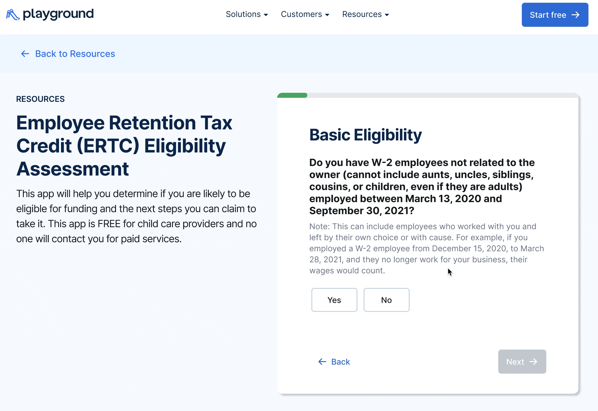HI-FI PROTOTYPE
Design System
Since we worked with Playground’s existing design system, we strived to blend our designs with Playground’s existing online identity throughout our entire process.
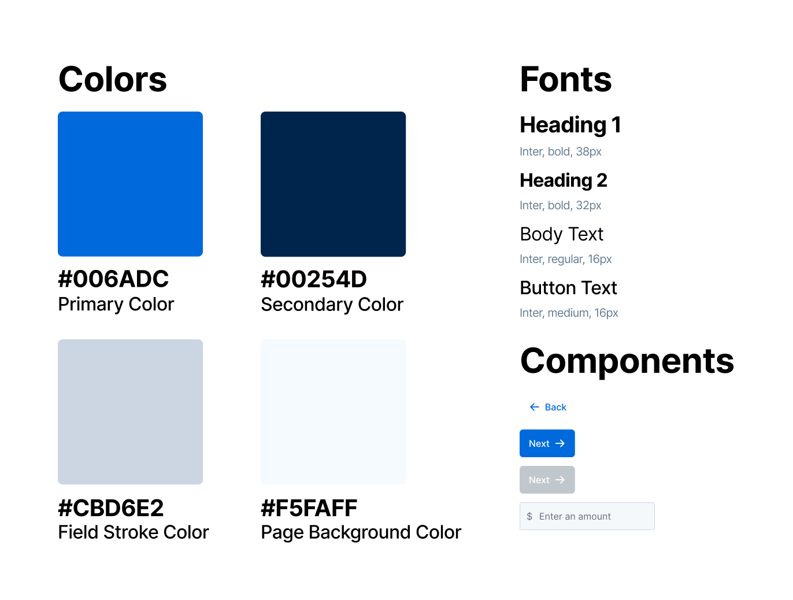DEVELOPMENT
Design to Development Handover
After the client approved my designs, I had to hand over my designs to the developers. Prior to this project, they have never used Figma before so I had to teach them how to use Figma. The developers especially struggled with the ERTC Eligibility Tool due to its complicated flow. Thus, I created a dedicated prototype and design file for the developers that was more organized by adding arrows to connect each flow and added descriptive instructions for details such as transitions, animations, and more. The final prototype has a fixed viewport which was inconvenient for the developers to reference, so in my prototype for the developers, I also unfixed the viewport to make it easier for them.
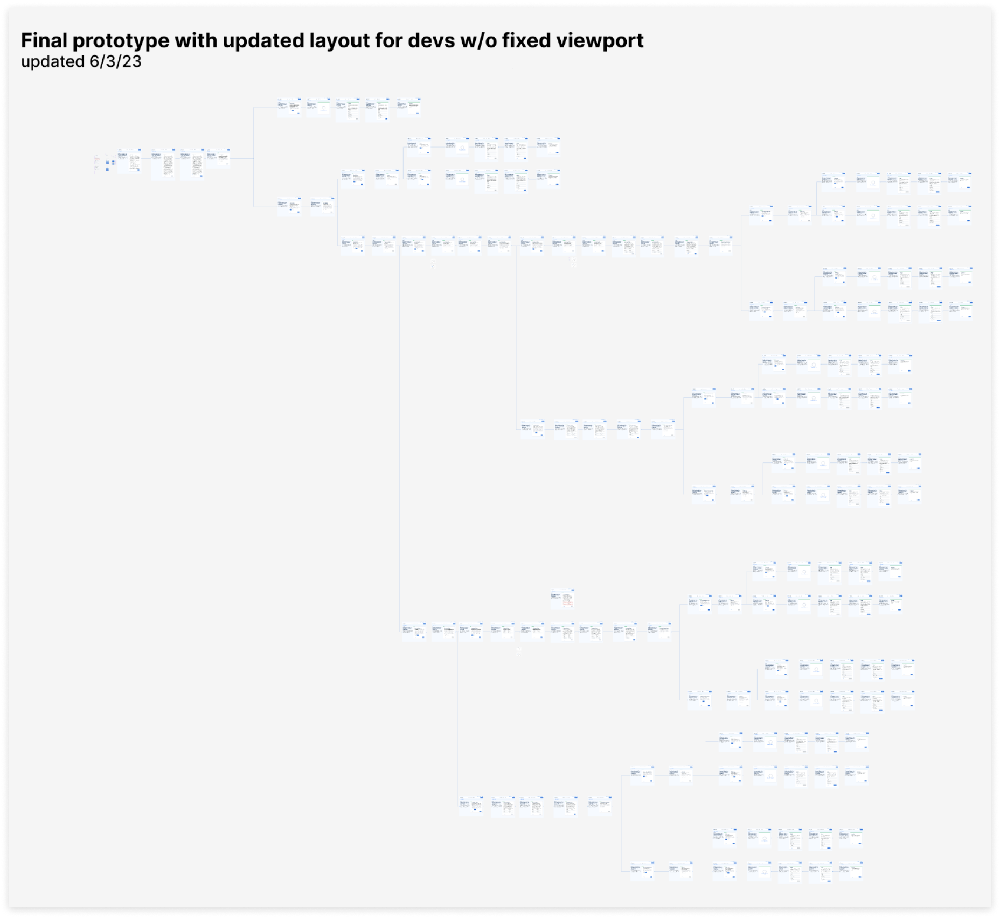CONCLUSION
Takeaways
This is my first time working on a real product with a client, and I would like to begin by thanking Playground and our main point of contact for the opportunity to work alongside them on their website. They provided me guidance and insight throughout the whole process, allowing me to gain more experience in the industry as well as grow professionally.
This experience brought to my attention many things that I never considered before and helped me strengthened many skills as a designer. For example, in the past, I never had to worry about the responsiveness of a product because my designs were hypothetical; however, for this project, all of my designs had to be responsive. I also gained experience doing developer handoffs and communicating with a client, which is an invaluable skill to have in the industry.
CONCLUSION
Challenges
Design Handoff to Developers
This was the first time I had ever worked with developers and communicating with the developers was initially challenging because they were not familiar with Figma; however, that was resolved after I offered them more support by creating more clear and organized design files. Another hurdle revolved around actualizing our designs. Our developers tried their best to translate our designs into code; however, they lack the same attention to detail as we possess as designers as their primary focus lay in the tool's functionality. Initially, they struggled to comprehend our meticulous scrutiny of even the minutest elements like padding and font thickness; however, as we spent more time explaining our design decisions to them, they progressively grasped the significance of these details and improved their ability to faithfully translate our designs into code.
Creative Freedom
One of the biggest challenge stemmed from miscommunication with our client. We began the project thinking our client wanted us to reference tools that they liked and had limited creative freedom in order to stay consistent with the design of the Playground website; however, during the middle of the project, we sorted out our misunderstanding and were able to gain more creative freedom.
Communication
Our client is based in New York, so we have to accommodate for the time difference. In addition, given our status as students, we all had varying schedules, so scheduling meetings were always difficult. In addition, our communication with the client experienced a temporary pause midway through the project. To address this situation, we organized a meeting with the client to discuss how we could more effectively adapt to his busy schedule.
CONCLUSION
Next Steps
Playground shared that they plan to implement our tools to their website some time in late 2023, and I am so excited to see my design come to life and be used by real users. The journey does not stop here as I will take all that I learned from this project and utilize them to refine my skills as a designer. I aim to design more interactive and functional experiences and be a better communicator to my future clients and developers. In particular, I learned that I lack experience handing off design files to developer so this is a key area that I will continue to strengthen in the future.